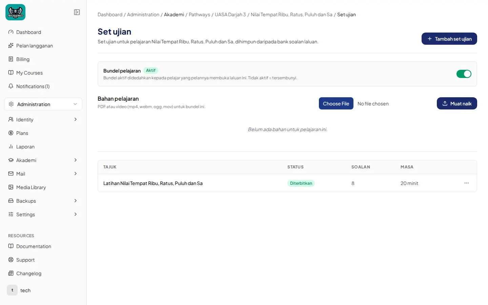
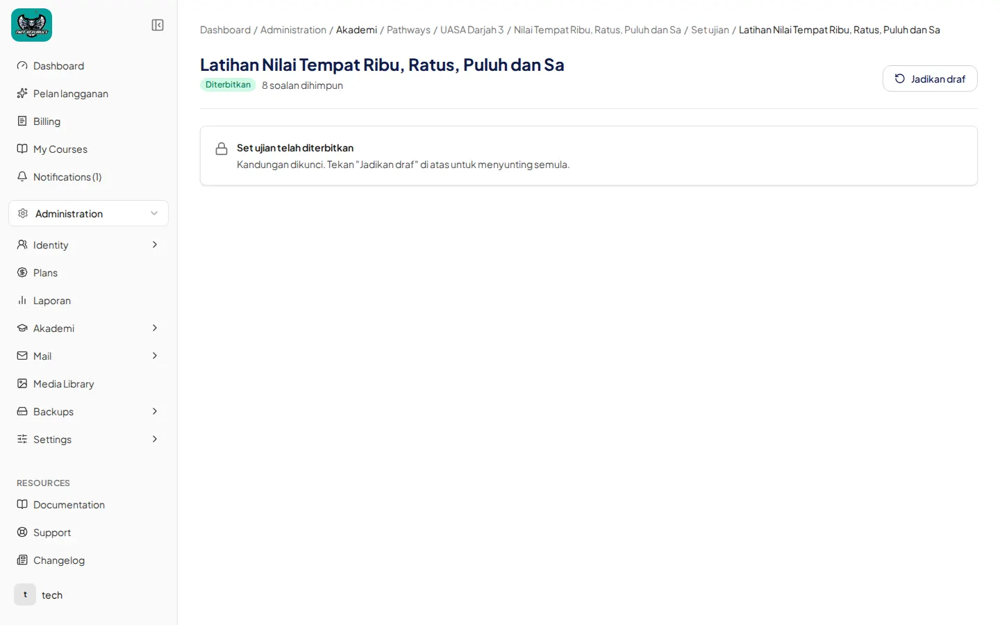
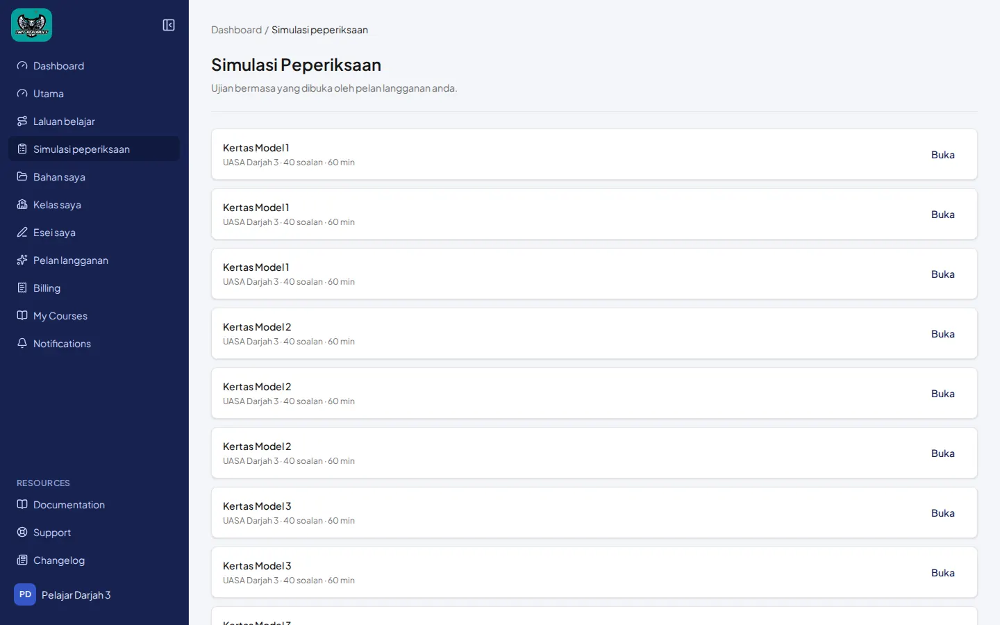
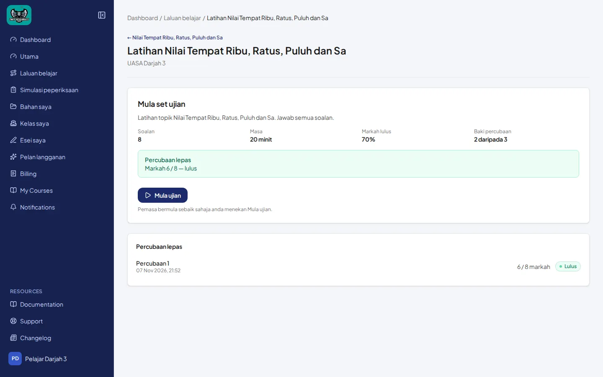

Set ujian pada pelajaran (laluan) & pandangan pelajar
Panduan 3a — feature pathway_exam_sets. Ini bukan ExamBuilder bahan guru. Untuk MCQ / Subjektif / Pemahaman / Esei pada bahan, lihat Panduan 3b.
Contoh utama: pelajaran Nilai Tempat Ribu, Ratus, Puluh dan Sa (UASA Darjah 3) → set Latihan Nilai Tempat Ribu, Ratus, Puluh dan Sa (8 soalan, 20 minit, diterbitkan). UPKK: latihan topik + bab Set Kuiz (contoh Set Kuiz 1, 40 minit) — data seed sebenar.
Bahasa Melayu
1. Senarai Set ujian (admin / guru)
- Dari pelajaran laluan, buka Set ujian.
- Tajuk halaman Set ujian. Butang + Tambah set ujian.
- Bundel pelajaran (badge Aktif) dan Bahan pelajaran (muat naik PDF/video) mungkin kelihatan di atas senarai.
- Jadual: TAJUK, STATUS (Diterbitkan), SOALAN, MASA.

2. Bina / terbit set
- Buka set. Status hijau Diterbitkan, teks cth. 8 soalan dihimpun.
- Apabila diterbitkan: banner kunci Set ujian telah diterbitkan — “Kandungan dikunci. Tekan Jadikan draf di atas untuk menyunting semula.”
- Untuk sunting semula: Jadikan draf, kemudian sunting Butiran set ujian (Tajuk, Arahan, Tempoh, Had percubaan, Peratus lulus, Acak susunan soalan), bahagian (Kod / Tajuk — bukan jenis MCQ/Subjektif/Pemahaman/Esei), dan pilih soalan dari Bank soalan laluan. Kemudian Terbitkan.

Skrin di atas menunjukkan set sudah diterbitkan (struktur dikunci). Medan tetapan penuh kelihatan selepas Jadikan draf. Bahagian set laluan ialah Kod/Tajuk bebas (cth. seed UPKK: Bahagian A — Objektif), berbeza daripada jenis bahagian ExamBuilder dalam 3b.
3. Pandangan pelajar
- Menu pelajar: Simulasi peperiksaan — “Ujian bermasa yang dibuka oleh pelan langganan anda.”
- Kad set (cth. Kertas Model 1 · UASA Darjah 3 · 40 soalan · 60 min) → Buka.
- Halaman pendaratan set: Mula set ujian — Soalan, Masa, Markah lulus, Baki percubaan; butang Mula ujian (“Pemasa bermula sebaik sahaja anda menekan Mula ujian.”). Sejarah Percubaan lepas.


English
Pathway Set ujian lives on a lesson, pulls from the pathway bank, and unlocks for students under Simulasi peperiksaan. Publishing locks structure until Jadikan draf. This is a different feature from the guru material ExamBuilder (3b).